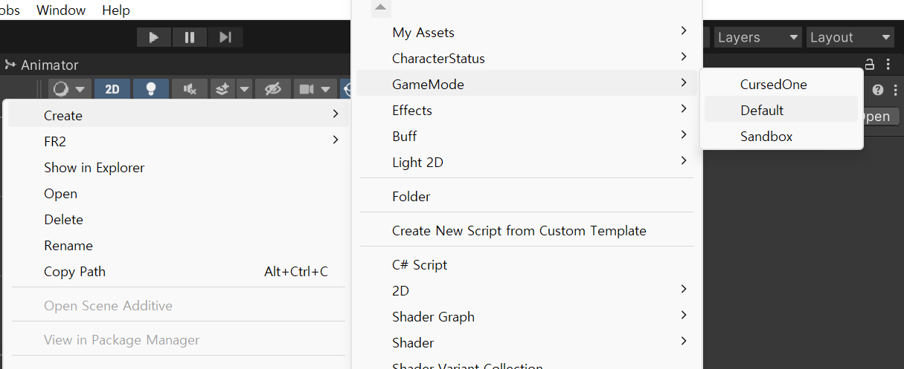
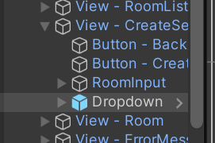
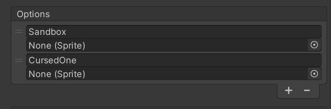

Game mode design
This chapter will explain how to make the game mode and how to implement the game mode. The game mode is a core system of our project.
Game mode structure
The game mode is scriptable object and a game session require the game mode that the host(room master) selected.

How to make the game mode
If you want to make a new game mode, you have to inherit the GameMode class. (You have to create game mode instance on Resources/ScriptableObjects/GameMode directory)
For example,
[CreateAssetMenu(fileName = "GameModeName",
menuName"GameMode/GameModeName", order = 0)]
public class NewGameMode : GameMode
{
...
}

And you have to add the game mode dropdown option.  